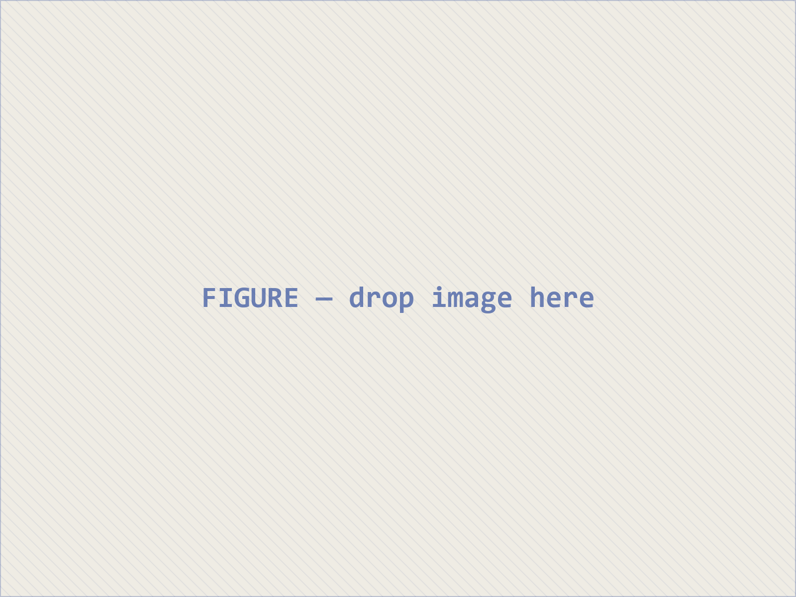

A one-line description of the talk.
Event · Place, DD Month YYYY
Two parts
An optional subtitle
The line under the band sets up the slide
A line of support.
A quieter line under it.
A ledger of labels and their text
Question for today: the one question the slide leaves open.
Each automated step is also a choice
What the first step does
What the second step does
What the third step does
What the fourth step does
What the fifth step does
What the sixth step does
Back to the source: one line on what the steps add up to.
What the collection holds

One line reading the figures.
Source: name the source of the figures.
Three parallel points, one card each
Two lines of support for the first point, in the card's smaller size
Two lines of support for the second point, in the card's smaller size
Two lines of support for the third point, in the card's smaller size
A second row starts on its own when there are more than three
Each row shares the height left on the slide
One line of support
Reading the cards: one line on what the six points add up to.
Each card links to a website by QR code
Kind of event · Funder
Place, DD–DD Month YYYY
Kind of event · Funder
Place, DD–DD Month YYYY
A definition, then the terms it rests on
One line on how the four terms relate.
High on the vertical axis, low on the horizontal one.
High on both axes.
Low on both axes.
Low on the vertical axis, high on the horizontal one.
Two or three lines on what the axes decide and which case matters most.
Five grades, from the highest to the lowest
First strategyOne line on what it is and what it risks.
Who uses itSecond strategyOne line on what it is and what it risks.
Who uses itThird strategyOne line on what it is and what it risks.
Who uses itFourth strategyOne line on what it is and what it risks.
Who uses itFifth strategyOne line on what it is and what it risks.
Who uses itQuestions and discussion